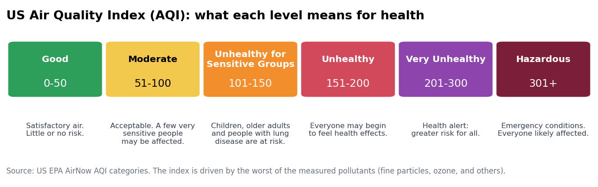

Introduction
Why air quality, weather and lung health belong together
Clean air is one of the most basic requirements for human health, yet the World Health Organization estimates that the combined effects of ambient and household air pollution are linked to about 7 million premature deaths every year. Among the many pollutants in the air, fine particulate matter, known as PM2.5, is considered the most dangerous because the particles are less than 2.5 micrometers across, roughly thirty times thinner than a human hair. These particles slip past the natural defenses of the nose and throat, settle deep in the lungs, and can pass into the bloodstream, where they contribute to asthma attacks, heart disease, stroke, lung cancer, and early death. Ground-level ozone, the main ingredient of smog, is a second major concern. It forms when sunlight cooks exhaust from vehicles and industry, and it inflames the airways, making breathing painful and triggering coughing and wheezing. In 2021 the World Health Organization tightened its guidelines and now recommends that PM2.5 stay below 5 micrometers per cubic meter as a yearly average and below 15 micrometers per cubic meter on any single day. Most of the world's population, including millions of people in wealthy countries, lives in places that exceed these limits. To make invisible pollution understandable, the United States Environmental Protection Agency converts pollutant measurements into the Air Quality Index, a color-coded scale that runs from Good to Hazardous. A reading above 100 means that the air is unhealthy for sensitive groups, and a reading above 150 means that everyone may begin to feel effects. Because the index is reported daily in weather apps and news broadcasts, it has become a practical guide for deciding whether to exercise outdoors, open windows, or keep children inside. Understanding what pushes that number up or down is therefore a question that touches nearly every household.

Weather and climate act as the hidden hand behind daily air quality. Hot, sunny days speed up the chemical reactions that create ozone, which is why smog alerts cluster in summer afternoons in cities such as Los Angeles, Phoenix, and Houston. Cold, calm winter nights can form temperature inversions, in which a lid of warm air traps pollution close to the ground, a pattern familiar in mountain valleys and basins like Salt Lake City, Boise, and Fresno. Wind does the opposite job by mixing and carrying pollution away, while steady rain can wash particles out of the air, although heavy traffic and dry soil can quickly refill it. Wildfire smoke shows that pollution does not respect borders. In June 2023, smoke from hundreds of wildfires in Canada drifted south, turned the sky over New York City orange, and pushed air quality readings in the northeastern United States to levels not seen in decades, with some reports of values above 400 on the index. Millions of people who live thousands of kilometers from the flames were told to stay indoors, cancel outdoor events, and wear masks. Climate change is expected to make such episodes more frequent, because warmer and drier conditions lengthen fire seasons and worsen ozone formation. The result is that a city's air quality on any given day depends on a mix of local traffic and industry, regional geography, seasonal patterns, and events that unfold far away. Untangling these influences is central to predicting when air will be unhealthy and to warning people in time.
The human cost of polluted air is felt most strongly in the lungs. Asthma affects roughly 25 million people in the United States, including millions of children, and is a leading reason for missed school days and emergency room visits. Chronic obstructive pulmonary disease, known as COPD, is a progressive illness that makes breathing steadily harder, and it ranks among the leading causes of death worldwide. Tobacco smoking remains the single largest cause of COPD, so any study of lung health must recognize that pollution is only one piece of a larger puzzle that also includes smoking, obesity, poverty, access to insurance, and occupational exposure. Children, older adults, pregnant women, outdoor workers, and people with existing heart or lung disease are considered sensitive groups because the same polluted air harms them more. Exposure is also unequal. Neighborhoods located near highways, ports, power plants, and industrial zones have historically been home to lower-income families and communities of color, who breathe more pollution and often have less access to health care. These overlapping burdens mean that two people in the same metropolitan area can have very different lung health outcomes. The economic side is large as well, since sick days, medications, hospital stays, and lost productivity cost societies billions of dollars each year. Public health researchers therefore look at pollution, weather, behavior, and health together instead of in isolation.
Decades of policy and technology have already produced real progress. The United States Clean Air Act of 1970 set national air quality standards and forced cleaner engines, fuels, and smokestacks, and average levels of many common pollutants have fallen substantially since then even as the economy and population grew. Catalytic converters, cleaner diesel rules, and the retirement of many coal plants all played a part, and the growth of electric vehicles promises further reductions in urban exhaust. Universities and cities have begun replacing gas-powered lawn equipment such as leaf blowers with quieter, cleaner electric alternatives, and some communities restrict wood burning on high-pollution days. Public tools now help ordinary people respond. Government monitoring networks, satellite observations, and low-cost community sensors feed maps and phone apps that show local air quality almost in real time, and many schools use colored flags to decide whether recess should be held outdoors. Researchers have linked air pollution to asthma, heart disease, and even dementia, and health agencies now publish local estimates of asthma and COPD, which allows pollution and disease to be compared across places. Much remains to be done. Monitoring is sparse in rural areas and in many low-income neighborhoods, wildfire smoke is growing into a national health problem, and the effects of hot weather and pollution acting together are still not fully understood. Better warnings, smarter city planning, and personal steps such as high-efficiency filters and well-fitted masks on smoky days can all reduce harm. Continuing to connect weather, air quality, and respiratory health will help communities decide where cleaner air matters most.
Ten Questions to Answer
- Which large US cities experience the most days with unhealthy air, and what distinguishes them from the cleanest cities?
- How much do temperature and sunshine influence ground-level ozone from one day to the next?
- Do rainy days actually have cleaner air than dry days, and how large is the difference?
- How strongly do windier days reduce the concentration of fine particles?
- How far did the June 2023 wildfire smoke change air quality in cities across the country, and how long did the effect last?
- Do cities with higher levels of fine particles also have higher rates of asthma?
- How closely does the share of adults who smoke track the share of adults living with COPD across US counties?
- Do regions of the country (Northeast, Midwest, South, West) differ in both air quality and respiratory illness, and what could explain the differences?
- Can US cities be grouped into a small number of types that share similar weather, air quality, and health profiles?
- Which weather conditions are the best warning signs that a day will have unhealthy air, and can an air quality category be forecast from weather alone?
Sources
- World Health Organization, Ambient (outdoor) air quality and health
- World Health Organization, Chronic obstructive pulmonary disease (COPD)
- US EPA and AirNow, Air Quality Index basics
- US EPA, Particulate matter (PM) basics
- US EPA, Clean Air Act overview
- US Centers for Disease Control and Prevention, Asthma and PLACES local health data